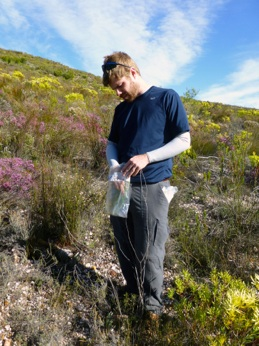

About me
I am a quantitative ecologist interested in building mechanistic models to forecast population and community responses to environmental change. Even the best data sets are imperfect for predicting global change responses, so I develop tools to combine data sources and explore data sets to gain insights into how biological systems may change.
Google Scholar Profile
Some Current and Recent Projects
Large scale range forecasts
In spite of the fact that species' ranges represent a core piece of information for understanding global change responses and developing spatial conservation plans, ranges are know for only a handful of the best studied taxonomic groups. I work to improve our prediction and understanding of species ranges by using large databases and develop new ecoinformatics tools. I work primarily with the Botanical Information and Ecology Network (BIEN) (bien3.org: sign up for an account; it's cool) and Map of Life (mol.org) as well as leading my own initiatives on the plant diversity of the Cape Floristic region of South Africa.
Demographic distribution models
To understand a species' response to a changing environment, it is critical to relate demographic heterogeneity back to its environmental drivers. I'm using demographic information to predict species ranges in a variety of projects. This includes proteas in South Africa, invasive plants in New England, trees in the western US (this one turns out to be pretty tricky), and trees in the eastern US (just getting started).
Maximum entropy and ecological theory
I've always been intrigued by the predictive success possible with maximum entropy models in ecology. In the last decade, maximum entropy models have been applied to ecological patterns in a variety of ways: macroecology, community assembly, ranges, and food webs. At the moment, I'm working on the most thorough tests of the maximum entropy theory of ecology within a single system (the Cape Floristic Region of South Africa). We're also developing an R package to facilitate other's using the theory. I've been ruminating for some time on alternative theoretical applications of maximum entropy models in ecology...
Promoting understanding of ecological models
As I've learned the intricacies of many of the models that I've used, I've translated that understanding in to a variety of published guides. These projects dive into the decision making process inherent in all models to help researchers understand the biological implications of different modeling choices. The focus is on demography and species' ranges.
Community abundance patterns in South African fynbos
This work is part of a larger collaborative effort focused on understanding the different aspects of biodiversity in plant communities in the Greater Cape Floristic Region (GCFR) of South Africa. We seek to understand the relationship between functional traits and patterns of genetic, functional and taxonomic diversity. Our goal is to integrate knowledge collected at these different scales to predict species and community responses, enhanced by understanding their evolutionary past. I'm focusing on determining how community-level distributions of functional traits vary along ecological gradients and how this variation can predict species' abundance patterns. Here are some brief articles about the project: link, link.